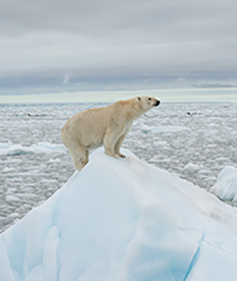
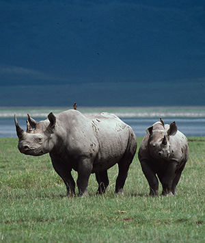
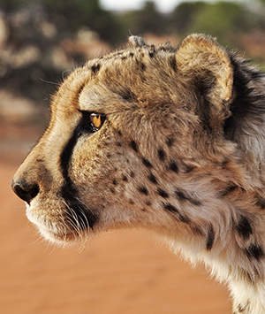

Schützen Sie die Geparde
Mit Ihrer Hilfe lösen wir den tödlichen Konflikt
Die schnellsten Landsäugetiere der Welt leben heute in einem Bruchteil ihres ehemaligen Verbreitungsgebietes. Die größte und damit wichtigste verbliebene Population findet sich im südlichen Afrika – auf den weiten, offenen Farmlandflächen, die sich hier aneinander reihen. Als Gefahr für ihre Rinder werden sie jedoch von vielen Farmern gejagt und an den Rand des Aussterbens gebracht. Dieser Konflikt muss dringend entschärft werden. Entschärfen Sie den Mensch-Gepard-Konflikt!
Geparde leben extrem heimlich und sehr verstreut. Doch immer wieder besuchen sie zentrale Anlaufstellen, die mit einigem Abstand in der Savanne verteilt sind. Hat ein Farmer hier seine Kälber stehen, ist die Gefahr groß: Für die jungen Rinder und für die Geparde, denen der Abschuss droht. Die einfache Lösung ist, die Kälber aus der Nähe solcher Anlaufstellen, den sogenannten Hotspots zu entfernen. Doch dazu muss man wissen, wo diese genau sind (und welchen Bewegungsmustern die Geparde folgen)
Technologisch aufwendige Forschung zeigt wichtige Bewegungsmuster der Geparde. Darauf basierende, stetige Überzeugungs- und Aufklärungsarbeit bei Namibias Farmern sorgt für Erfolg.
  